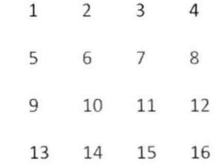

27.二叉树的镜像
请完成一个函数，输入一颗二叉树，该函数输出它的镜像。
思路
遍历时，交换左右子树。然后递归的去交换子树就可以了。直到root为null
28.对称的二叉树
请实现一个函数，用来判断一颗二叉树是不是对称的。如果一颗二叉树和他的镜像一样，那么它是对称的。(LeetCode 101. Symmetric Tree)
思路
用前序遍历时时“根左右”，通过观察与“根右左”的在对称的二叉树序列是一样的。哈哈。在定义三种遍历方式时，都是针对于根的。没有定义左于右的顺序。
不过这个递归表达是由点难想到。
29. 顺时针打印矩阵
输入一个矩阵，按照从外向里以顺时针的顺序依次打印出每一个数字。例如输入如下矩阵

思路
可以将矩阵分圈打印。那么难点在于边界条件的判定。
30. 包含min函数的栈
定义栈的数据结构，请在该类型中实现一个能够得到栈的最小元素的min函数。在该栈中调用min,push及pop的时间复杂度O(1)
思路
入栈比较，是最小值入栈，不是最小值，将栈重新入栈。这样每出栈时，辅助栈也会出栈。
31. 栈的压入与弹出序列（这个思路是清晰的，但实现起来有点麻烦未实现完）
输入两个整数序列，第一个序列表示栈的压入顺序，请判断第二个序列是否为该栈的弹出顺序。假设压入栈的所有数字均不相等。例如，序列{1，2，3，4，5}是某栈的压栈序列，序列{4，5，3，2，1}是该压栈序列对应的一个弹出序列，但{4，3，5，1，2}就不可能是该压栈序列的弹出序列。
思考
可以模拟入栈与出栈的过程，待输入序列是1,2,3,4,5,待输出序列是4,5,3,2,1,则，对入栈一直入栈，当发现即将要入栈的元素与输出序列的元素相等时，入栈并出栈这个元素。头部元素与输出序列的下一个比较，相等则出栈。不相等就将下一元素入栈。发现头部元素与待书序序列不等，且与即将输入的元素不等时，即不是其输出序列。
32. 从上到下打印二叉树(不换行)
从上到下打印出二叉树的每个节点，同一层的节点按照从左到右的顺序打印。例如，输入图4.6中的二叉树，则依次打印出8,6,10,5,7,9,11。
思路（我的）
就是二叉树的层序遍历。
层序遍历的实现，根入队列，出队列时将其左，右节点入队列。知道最终队列为空。
32.1 从上到下打印二叉树(换行)
从上到下打印二叉树,同一层的节点按从左到右的顺序打印，每一层打印到一行。
思路
与上面的相同，只是需要找到如何去标记换行的问题。
换行的问题，可以记录入已经在本行打印了的，记录下一行要打印的个数。
32.2 之字形打印二叉树
实现一个函数按照之字形顺序打印二叉树，即第一行按照从左到右的顺序打印，第二层按照从右到左的顺序打印，第三行在按照从左到右的顺序打印，其他行以此类推。
思路（哈哈，这个是我自己想出来的哟）
和上面的思路类似。只是为了保证打印时的顺序按照所需要的。搞两个栈，一个正序入栈，一个逆序入栈。相互交换着输出。
33. 二叉搜索树的后序遍历序列
输入一个整数数组，判断该数组是不是某二叉搜索树的后序遍历结果。如果是则返回true,否则返回false.假设输入的数组的任意两个数字都互不相同。例如，输入数组{5，7，6，9，11，10，8}，则返回true,因为这个整数序列是图4.9二叉搜索树的后序遍历结果。如果输入的数组时{7,4,6,5},则由于没有哪棵二叉搜索树的后序遍历结果是这个序列，因此返回fasle;
思路（我自己分析出来的）
思考过程，刚开始的确没有思路，从二叉搜索树的特征来看，每个节点的左边小于根节点，每个节点的右边大于根节点。所以可以找到整个序列的根节点。然后找出左子树与右子树。在分别对左右子树看其是否左子树元素都小于根，右子树都大于根。
测试用例
完全二叉树，只有左子树，只有右子树，只有一个节点，空树等。
34. 二叉树中和为某一值的路径
输入一棵二叉树和一个整数，打印出二叉树中节点值的和为输入整数的所有路径。从树的根节点开始往下一直到叶节点所经过的节点形成一条路径。
思路
要寻找某一条路径。明显的找到根节点然后尝试添加为和。知道根节点。在外部维持一个栈，访问元素时，添加栈，退出递归时将元素移除栈。在刚好和的值与要找的相等时，刚好栈里就是路径。
测试用例
如果有多个路径能支持的情况
在中间值，就已经找到了
在叶子节点才找到
35.复杂链表的复制（这题要有发散思维）
请实现函数复制复杂链表。在复杂链表中，每个节点除了有一个m_pNext指针指向下一个节点，还有一个m_pSibling指针指向链表中的任意节点或者null;
思路
我的思考，先将主要的链条连接起来。然后将次要链条连接。那么思考在次要链表的链接上实际可能的花废O(n2);
优化思路1
基于以上思路，o(n2)的花费主要是寻找其他节点位置上。可以用hasn表存储
这样解决的办法是用空间换时间。
优化思路2(这种)
对于优化思路1的空间问题，我们要实现不用辅助空间的情况下实现O(n);


36. 二叉搜索树和双向链表
输入一颗二叉搜索树，将该二叉搜索树转换成一个排序的双向链表。要求不能创建任何新的节点，只能调整树中节点指针的方向。
思路
因为二叉的特性。根节点一定大于左子树的所有节点，根节点一定小于右子树的所有节点。要将其换成双向链表。首先弄成单向链表。将子树的右子树移动到根节点的右上。左子树移动到父节点的右下。递归进行。
37. 序列化二叉树
请实现两个函数，分别用来序列化和反序列化二叉树
思考
二叉树的序列化，就是保证序列化后的唯一。要保证唯一。可以保存先序遍历，在保存中序遍历。这样可以恢复二叉树。
优化思路（这种思路较好，用特殊字符代表null，是我没想到的）
上面的过程需要将两个序列化都读取后才能进行恢复。我们可以根据前序遍历的顺序来序列化二叉树，因为前序遍历是从根节点开始的。在遍历二叉树碰到null指针时，这些null指针序列化为一个特殊的字符。
38.字符串的排列
输入一个字符串，打印出该字符串中字符的所有排列。例如输入字符串abc,则打印出字符a,b,c所能排列出来的所有字符串，abc,acb,bca,cab,cba;
思路（思想很重要）
通过上面的排列，可以将其分成以a开头的，以b开头的，以c开头的，然后分别后面的进行排列，重复这个过程。
即将问题转换成子问题。同过子问题的递归。